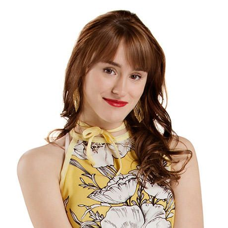
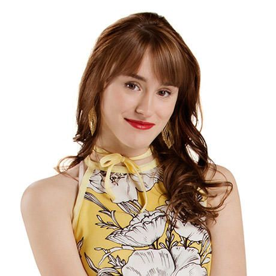
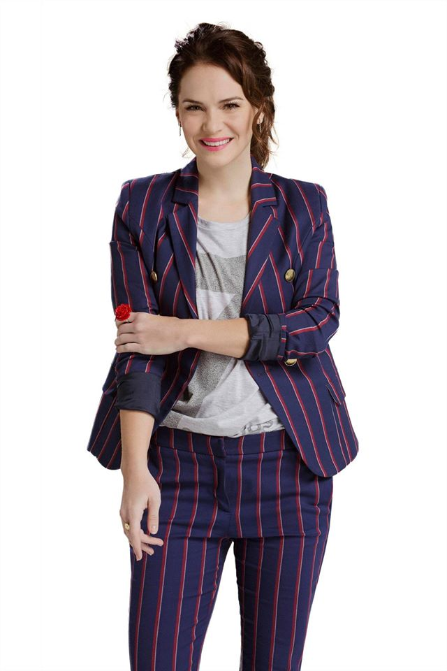
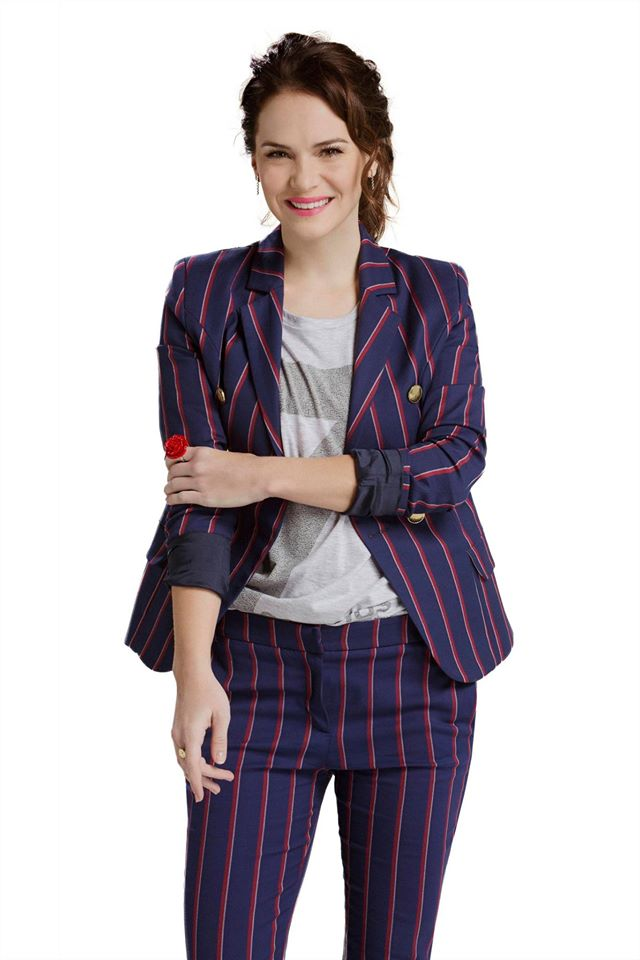
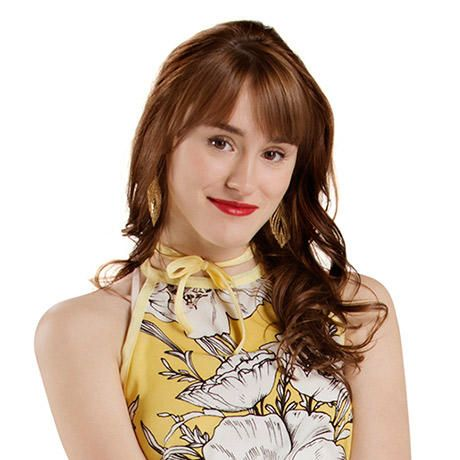
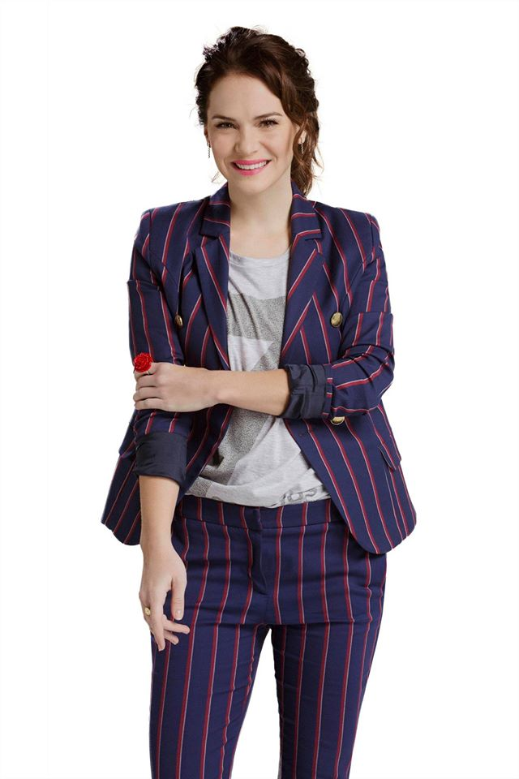

 


Luna Valente (Karol Sevilla) vive feliz no México. Ela tem um part time a entregar comida, o que faz com que possa passar os seus tempos livres a fazer aquilo que mais gosta: estar com o seu melhor amigo Simón e andar de patins em Cancún. A vida de Luna sofre uma reviravolta inesperada quando ela se muda com os pais (Miguel e Mónica) para a Argentina por causa do trabalho. Luna refugia-se nos seus patins e descobre o Jam & Roller (uma pista de patinagem). É aqui que começa a viver grandes aventuras. Conhece a sua nova melhor amiga (Nina) e muitos mais amigos como o Nico, o Pedro, a Jim, a Yam e o Ramiro. Mas nem sempre é tudo de bom, sempre há alguém que implica na história e aqui é a Ámbar e as suas amigas (Delfina e Jazmín). Depois há também o Matteo, namorado da Ámbar e quando chega a Luna á Argentina, a relação da Ámbar e do Matteo vai ter altos e baixos.

